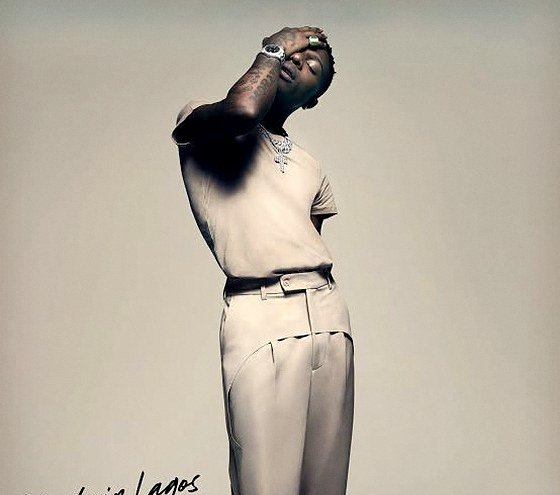
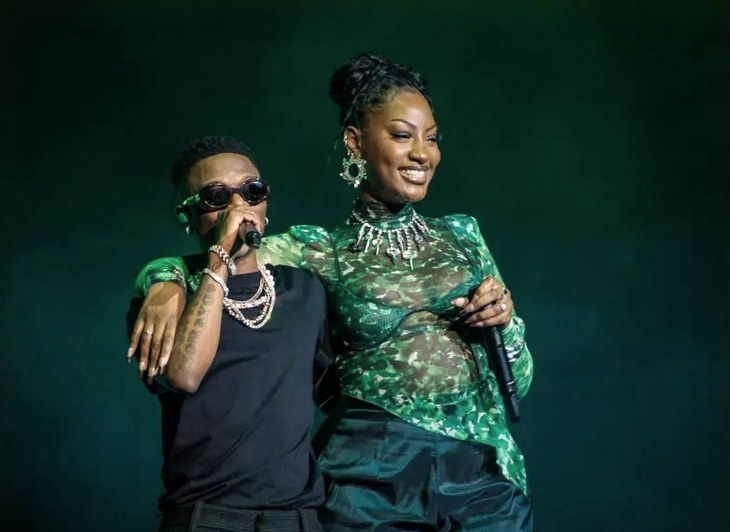

Made in Lagos at six
Wizkid's fourth album arrived two weeks late, in the middle of a national uprising. Then it went on to rewrite Africa's chart records, from Spotify to the Billboard Hot 100.
Some albums arrive at the perfect moment. Made in Lagos arrived at the most difficult one possible, and became one of the most important African records of its generation anyway. Six years on, it's worth remembering how it happened.
October 2020Held back for Nigeria
Wizkid had set Made in Lagos for release on 15 October 2020. But that month Nigeria was in the streets. The #EndSARS protests against police brutality by the Special Anti-Robbery Squad had spread across the country, led largely by young Nigerians, and Wizkid had joined the calls for change.
He decided it wasn't the time to sell music. When a fan asked about the album on Twitter, his reply was short: not yet, these are mad times. The release was pushed back, and when the album did arrive, he described it as a tribute to Nigeria.
29 October 2020Fourteen tracks at 11:11pm
It finally went live at 11:11pm Lagos time on Thursday 29 October (1:11am on the 30th in Nairobi), just ahead of its official release date. Fourteen tracks, released through RCA, with a guest list that told you exactly how far Wizkid's reach had grown: Burna Boy, Skepta, Damian Marley, H.E.R., Ella Mai, Terri, Tay Iwar and a then-rising singer named Tems.
The sound was softer than the dancefloor Afrobeats many expected. It was warm, unhurried and full of R&B and reggae touches, the kind of album you play from start to finish rather than skip through for singles.
The first weekA first for Africa
The numbers came fast. In its first week, Made in Lagos debuted at No. 10 on Spotify's Global Album chart, the first African album to debut on that chart, let alone inside the top ten. Nine days after release it had passed 100 million streams across five platforms.

2021Essence makes history
Then came the slow burn. “Essence”, the album's duet with Tems, wasn't released as a big lead single, but listeners in the US found it on their own. In July 2021 it debuted on the Billboard Hot 100 at No. 82. It was Tems’ first ever entry on the chart.
That summer, Justin Bieber jumped on an official remix, which arrived with the album's deluxe edition in late August. In October 2021, “Essence” climbed to No. 9, making it the first Nigerian song ever to reach the Hot 100's top ten. Rolling Stone named it the best song of 2021.
The album rode the wave too. In late August 2021, ten months after release, Made in Lagos reached No. 1 on Billboard's World Albums chart.

February 2022A 27-year record falls
By early 2022, the question was no longer whether Made in Lagos would chart, but how long it would stay. In February it matched the 66 weeks that Cape Verdean legend Cesária Évora's self-titled album had spent on the World Albums chart, a record that had stood for 27 years. The following week it logged its 67th week and the record was Wizkid's alone.
It never really left. In April 2025 it became the first African album to spend 150 weeks on the chart, and by late August 2025 it had passed 160.
Six years onStill on repeat
At the 64th Grammy Awards, Wizkid earned two nominations: Best Global Music Album for Made in Lagos (Deluxe) and Best Global Music Performance for “Essence”. He didn't win either, but the nominations confirmed what the charts had already shown: this was an African album the whole world was listening to.
It also opened doors. Tems went from a guest verse on Made in Lagos to one of the biggest voices in global music. And every African artist who has since chased the Hot 100 top ten has been following a path that “Essence” cleared first.
Six years after a release that almost didn't happen, Made in Lagos still sounds like a Sunday afternoon in the city it's named after. Which track still runs your playlist?
Sources
- MyJoyOnline: EndSARS, Wizkid postpones album launch (Oct 2020)
- Revolt: Wizkid releases Made in Lagos (Oct 2020)
- The Will: Wizkid finally releases anticipated album (Oct 2020)
- Music In Africa: Wizkid releases Made in Lagos
- Capital FM: Made in Lagos catapults Wizkid into chart history
- NotJustOk: International records Wizkid set with Made in Lagos
- Arise: Essence debuts on the Hot 100 at No. 82 (Jul 2021)
- Essence: Wizkid's Essence breaks the top 10 (Oct 2021)
- Grammy.com: Made in Lagos and Essence, for the record
- WithinNigeria: Made in Lagos hits No. 1 on World Albums (Aug 2021)
- NotJustOk: Wizkid ties 27-year Billboard record (Feb 2022)
- Music In Africa: Wizkid beats 27-year Billboard record (Feb 2022)
- NotJustOk: Made in Lagos hits 150 weeks (Apr 2025)
- BusinessDay: Made in Lagos at 163 weeks (Aug 2025)
- OkayAfrica: 2022 Grammy nominations
Every fact in this story was checked against at least two independent sources.